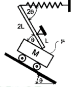
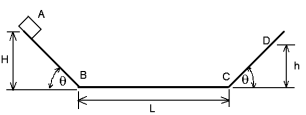
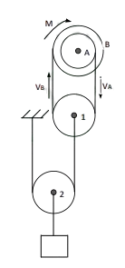

Prueba Suficiencia Academica
Este examen ha sido creado en base a exámenes de admisión de diferentes gestiones de la universidad, con el objetivo de brindarte una práctica más realista y efectiva para tu preparación académica. (SE ACTUALIZA CADA AÑO)
1. Resolver:
Durante el desarrollo histórico de la Biología surgieron diferentes explicaciones acerca del origen de los seres vivos. ¿Cuál de las siguientes afirmaciones corresponde a la teoría de la generación espontánea?


2. Resolver:
Francesco Redi realizó experimentos relacionados con la aparición de organismos en materia orgánica en descomposición. ¿Cuál fue la principal conclusión que se obtuvo de sus experimentos?
3. Resolver:
Una población de organismos presenta variaciones entre sus individuos. Algunas de estas características permiten que determinados individuos sobrevivan y se reproduzcan con mayor éxito en un ambiente determinado. ¿Qué proceso evolutivo describe principalmente esta situación?
4. Resolver:
Una población de organismos queda separada geográficamente en dos grupos que, después de numerosas generaciones, acumulan diferencias que impiden su reproducción entre sí. ¿Qué proceso se evidencia principalmente?
5. Resolver:
Un organismo mantiene relativamente constantes determinadas condiciones internas a pesar de las variaciones que ocurren en el ambiente externo. Esta característica es fundamental para conservar su funcionamiento adecuado. ¿Cómo se denomina este proceso?
6. Resolver:
Una planta ubicada junto a una ventana desarrolla un crecimiento orientado hacia la fuente de luz. Desde el punto de vista de las características de los seres vivos, este fenómeno constituye principalmente un ejemplo de:
7. Resolver:
Los organismos vivos están constituidos por diversos elementos químicos. ¿Cuál de los siguientes grupos corresponde a los bioelementos primarios o principales señalados en el material?
8. Resolver:
Una célula necesita transformar sustancias para obtener y utilizar energía, además de producir compuestos necesarios para su funcionamiento. El conjunto de reacciones químicas que ocurren en el organismo recibe el nombre de:
9. Resolver:
La clasificación científica permite organizar a los organismos de acuerdo con sus características y relaciones. ¿Qué disciplina biológica se ocupa principalmente de la clasificación de los organismos?
10. Resolver:
En la clasificación científica, cada especie recibe una denominación formada por dos términos. ¿Cuál es la finalidad principal de este sistema de nomenclatura?
11. Resolver:
Los virus presentan una organización diferente a la de las células. ¿Cuál de las siguientes características permite diferenciarlos fundamentalmente de los organismos celulares?
12. Resolver:
Al comparar una célula procariota con una célula eucariota, ¿cuál de las siguientes características permite establecer una diferencia fundamental?
13. Resolver:
Una célula requiere producir grandes cantidades de energía para mantener sus actividades metabólicas. ¿Qué organelo se encuentra directamente relacionado con la producción de energía celular?
14. Resolver:
Durante el ciclo celular, una célula somática origina dos células hijas que conservan, en condiciones normales, el mismo número de cromosomas que la célula original. ¿Qué proceso de división celular corresponde a esta descripción?
15. Resolver:
¿Cuál de las siguientes afirmaciones establece correctamente una diferencia entre la mitosis y la meiosis?
16. Resolver:
En genética, un individuo puede presentar una determinada característica observable como consecuencia de la interacción entre su información genética y el ambiente. ¿Cómo se denomina el conjunto de características observables de un organismo?
17. Resolver:
En un estudio de herencia, un investigador analiza cómo se transmiten determinadas características de una generación a otra. ¿Qué científico es reconocido por establecer las leyes fundamentales de la herencia mediante sus experimentos con plantas?
18. Resolver:
La histología estudia la organización de los tejidos. En los animales se reconocen diferentes tipos de tejidos con funciones específicas. ¿Cuál de las siguientes alternativas corresponde a los principales tipos de tejido animal señalados en el material?
19. Resolver:
En un ecosistema, los organismos interactúan entre sí y con elementos físicos como el agua, la temperatura, la luz y el suelo. ¿Cómo se denominan los componentes no vivos que forman parte de un ecosistema?
20. Resolver:
Una comunidad busca reducir su impacto ambiental mediante el uso responsable de los recursos naturales y la disminución de emisiones relacionadas con los gases de efecto invernadero. ¿Cuál de las siguientes acciones contribuye directamente a este objetivo?
21. Resolver:
Si el número de masa del ion Cu+2 es 64 y el número atómico es 29, este tiene:
22. Resolver:
Si un día la temperatura fue de 10°F y al día siguiente subió a 28°F, ¿cuál fue la variación de
temperatura en ºC?
23. Resolver:
¿Cuál es la composición centesimal del Fe Cl 3?
24. Resolver:
Un compuesto tiene 39.5% de K, 27,92% de Mn y 32,68% de O. ¿Cuál es la fórmula empírica?
25. Resolver:
A 20 °C un gas saturado de vapor de agua tiene una Presión de vapor es de 17,54 mmHg. ¿Cuál es
la Presión de vapor al 28% de humedad relativa?
26. Resolver:
Acido sulfhidrico
27. Resolver:
Alcohol Etilico
28. Resolver:
N 2O 4
29. Resolver:
CH3-CHOH-CH3
30. Resolver:
Ca 3(PO 4 ) 2
31. Resolver:
COOH-CH 3-COOH
32. Resolver:
ZnHPO 3
33. Resolver:
Eteno
34. Resolver:
Cloruro Calcico Sodico
35. Resolver:
etanal
36. Resolver:
Se tiene una solución de Sulfato de cobre pentahidratado (CuSO 4 5H 2O) de 8 litros densidad relativa
1,2 y composición 70 % en masa de Sulfato de cobre pentahidratado. Determinar:
a) El número de átomos de hidrógeno existentes en la solución,
b) La cantidad de moles de sulfato de cobre anhidro presentes en la solución.
37. Resolver:
Formule e iguale por el método del ion electrón la siguiente ecuación química: arseniato de plata
reacciona con cinc y ácido sulfúrico para producir sulfato de cinc, arsina, plata metálica y agua.
Se hacen reaccionar 150,0 g de arseniato de plata con una pureza del 92,0 % con 100,0 g de cinc metálico
utilizando un exceso de ácido sulfúrico. Al finalizar la reacción, se obtienen 40,0 g de plata metálica como
producto. a) Calcule el reactivo limitante de la reacción b) ¿Cuál es el rendimiento porcentual de la plata
metálica obtenida?
38. Resolver:
Un recipiente de acero con un volumen que no varía contiene 20 moles de SO 2, 8 moles de SO y 12
moles de H 2. Se añade un gas “X” desconocido a temperatura constante, donde las fracciones molares
iniciales se reducen cada uno a la mitad, el peso molecular de la mezcla final se duplica. Todo el
proceso se realizó a temperatura constante. Calcular el peso molecular del gas añadido en g/mol
39. Resolver:
El Sistema de la figura se encuentra en equilibrio,
donde el resorte de constante de rigidez K=1000 [N/m] esta
comprimido una distancia x=10 [cm] y la barra de peso
wb=10 [kgf] empuja al carrito de masa M=10 [kg] evitando
que resbale. Considerando que solo existe fricción entre el
carro y la barra, calcular el coeficiente de rozamiento µ
.𝜃 = 30°

40. Resolver:
Un objeto de masa m se suelta en el
punto A, el sistema tiene los siguientes datos:
H = 2 [m], = 45° y L (horizontal) = 4 [m].
Calcular la altura máxima h que alcanza sobre
el plano inclinado CD si el coeficiente de
rozamiento es 1
5
entre el objeto y todas las
superficies de contacto

41. Resolver:
Una esfera “1” choca con otra esfera “2” inicialmente en reposo, de manera
perfectamente inelástica, considerando que ambas tienen la misma masa, determinar la
relación de la energía mecánica final respecto de la energía mecánica inicial. Tomar en
cuenta que la gravedad es 9.81 [m/s 2
] y no hay fricción en el piso.
42. Resolver:
En un campo de tiro dos proyectiles A y B son lanzados con la misma rapidez, con
inclinaciones de θ A =37º y θ B=53º respecto de la horizontal y experimentan iguales
alcances horizontales. El proyectil A alcanza una altura máxima de 6 [m] ¿Qué altura
máxima alcanza B? (Considere g=9,81 [m/s 2
]).
43. Resolver:
Considerando que el bloque desciende con una velocidad de 5[cm/s]. Determinar las
velocidades angulares de A y B, considerando R A =10[cm], R B=15[cm]

44. Resolver:
x 4+2x 3-7x 2-8x+m ≤ 0
siendo m el resto de la siguiente division:
45. Resolver:
Hallar una expresión simplificada de 𝑪 = e
(log bE - log b√2 )
46. Resolver:
Hallar un número entre 𝟏𝟎 y 𝟏𝟎𝟎, tal que, si se multiplica el número
buscado por su dígito de las decenas, el producto es 280; además si a la suma
de sus dígitos se multiplica por el mismo digito (el de las decenas), el producto
es 𝟓𝟓.
47. Resolver:
En los extremos de una calle hay dos edificios, que distan 𝒃 [𝒎] de sus
bases. Desde el punto medio de la calle se miden los ángulos de elevación de
las azoteas, cuya suma es 𝟗𝟎°. El ángulo de elevación desde el pie del edificio
más alto al edifico de menos pisos es 𝝋 y desde el pie del edificio de menos
altura al más alto es 𝟐𝝋. Hallar la distancia entre las azoteas de los edificios
en términos de "𝒃"
48. Resolver:
Hallar la ecuación de la circunferencia tangente a las rectas de
ecuaciones: 𝒙 + 𝒚 + 𝟒 = 𝟎 y 𝟕𝒙 − 𝒚 + 𝟒 = 𝟎 y que tenga su centro en la recta
que pasa por los puntos 𝑨 (1/2 , 0) y 𝑩 (0 , 2/3
)